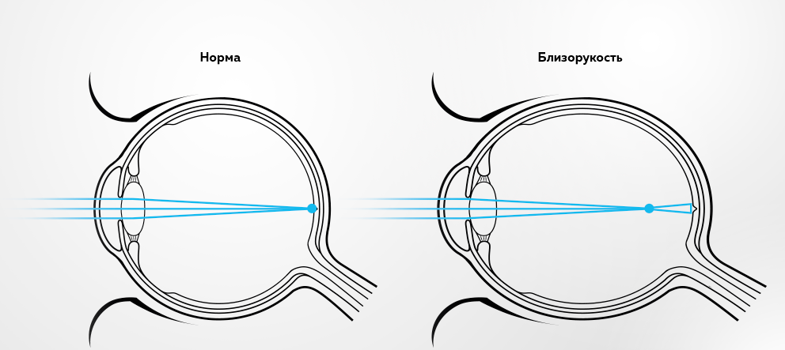

БЛИЗОРУКОСТЬ
1. Признаки и симптомы близорукости
Чаще всего близорукость начинает развиваться еще в детстве, особенно сильно с началом учебной деятельности в школе. Нагрузка на глаза увеличивается, при этом со временем ребенок может начинать плохо видеть написанные слова на доске, близко подносить к лицу книгу и щурить глаза, чтобы рассмотреть удаленные предметы. Обычно прогрессирование заболевания происходит до 18 лет.
Основные симптомы близорукости:
Снижение зрения вдаль: картинка расплывчатая и нечеткая.
Прищуривание глаз во время попытки разглядеть предмет на удаленном расстоянии.
Быстрое утомление и постоянное напряжение глаз.
Если обнаруживается хотя бы один из вышеперечисленных симптомов, нужно пройти диагностику зрения и проконсультироваться со специалистом.
2. Виды и степени близорукости
Существует несколько видов миопии:
Врожденная близорукость — болезнь появляется из-за аномалий развития глаза, диагностируется у детей в раннем возрасте.
Ложная близорукость — состояние возникает из-за спазма ресничной мышцы, после своевременной терапии зрение может нормализоваться.
Рефракционная близорукость — ее причина кроется в некорректной работе оптической системы глаза из-за измененной формы роговицы.
Осевая близорукость — заболевание возникает из-за увеличения длины глаза, когда лучи света не достигают сетчатки.
Осложненная близорукость — патология сопровождается анатомическими изменениями глаза, которые могут привести к серьезным последствиям.
Выделяют 3 степени близорукости:
Слабая степень миопии
Аномалия рефракции не превышает 3 диоптрий.
Средняя степень миопии
Аномалия рефракции составляет 3-6 диоптрий.
Высокая степень миопии
Аномалия рефракции превышает 6,25 диоптрий.
3. Основные причины развития близорукости
1. Наследственность
Если хотя бы один из родителей имеет миопию, вероятность развития этого заболевания у ребенка повышается с 8 до 24%. Если у обоих родителей выявлена близорукость, то в 50% случае она передается по наследству.
2. Высокие зрительные нагрузки вблизи
Продолжительные нагрузки на зрение приводят к пересыханию слизистой оболочки и перенапряжению аккомодационной системы глаза.
3. Неправильная коррекция зрения
Отсутствие коррекции близорукости или ее неправильное проведение, например, если очки или контактные линзы были подобраны неверно, могут привести к прогрессированию заболевания.
4. Несбалансированное питание
Отсутствие в организме важных для зрения микроэлементов и витаминов, например, магния, цинка или меди.
4. Методы коррекции близорукости
Сегодня существует несколько действенных методов коррекции близорукости, которые способны замедлить развитие заболевания, устранить аномалию рефракции и вернуть хорошее зрение.
1. Терапевтическое лечение
При этом виде лечения применяются витаминные и лекарственные препараты, аппаратное лечение и специальные комплексы упражнений для глаз. Каждый из способов используется как по отдельности, так и в совокупности друг с другом. Этот метод способен замедлить или остановить развитие заболевания, чаще всего применяется при миопии у детей.
2. Оптическая коррекция
Безоперационная коррекция миопии посредством очков, мягких контактных или ортокератологических линз.
Ортокератологические линзы — специализированные жесткие контактные линзы обратного дизайна для ночного ношения. Они используются ночью для временного изменения формы роговицы глаза, полученный результат которых позволяет обходиться без очков и линз весь день и способствует стабилизации миопии.
3. Кераторефракционная лазерная хирургия
При диагнозе миопия применяется ряд методов лазерной коррекции: ReLEx SMILE, ReLEx FLEx, Femto Super LASIK, Super LASIK и ФРК. Основная суть процедур заключается в том, что лазер за считанные секунды изменяет форму роговицы, это дает возможность правильно сфокусировать изображение на сетчатке. Вся процедура занимает всего 10-15 минут, а хорошее зрение восстанавливается через пару часов.
4. Факорефракционная хирургия
При противопоказаниях к лазерной коррекции миопии специалисты предлагают пациентам имплантацию факичных интраокулярных линз (ФИОЛ). ФИОЛ представлена в виде специальной внутриглазной линзы, которая помещается за радужной оболочкой, обеспечивая правильный фокус изображения на сетчатке.
5. Изображение
